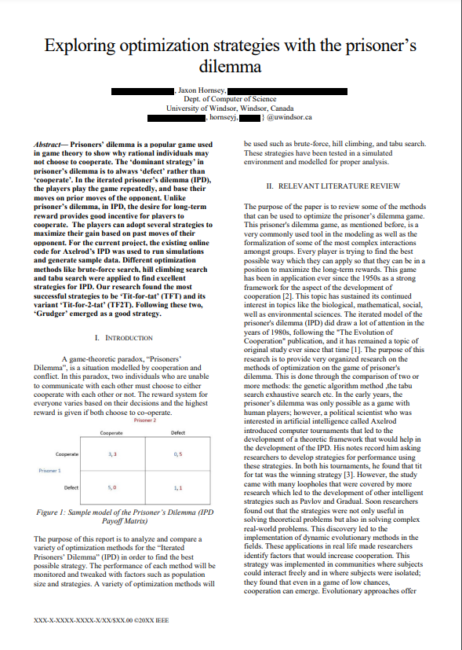
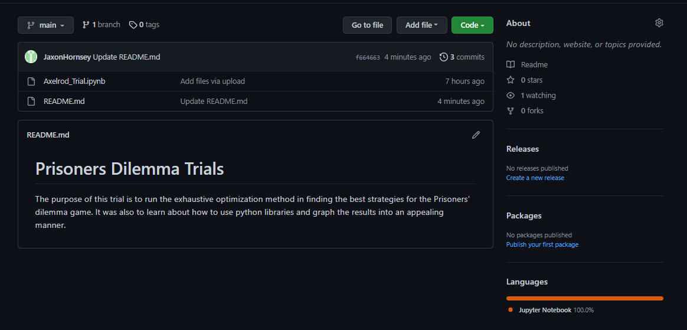

Exploring Optimization Strategies
with the Prisoner's Dilemma

Purpose and Environment
This paper is the result of a collaboration with myself and 3 other peers. We completed this project on schedule by setting ourselves milestones along with having tri-weekly meetings.The purpose of the paper is to compare different optimization methods in finding the best strategies for the Prisoners' dilemma game. It was also to learn about how to use python libraries and graph the results into an appealing manner.
The code for this project was written in the jupyter-notebook environment and coded in Python.The axelrod library was used for this project and supplied game strategies and tournmanet methods. The matplotlib library has standard functions for the graphing the wins and losses of each strategy.

Our Project Consisted of These Main Milestones
- How to implement these optimization methods
- Using python and axelrod library.
- Algorihtm step by step breakdown.
- What factors will bias our results.
- Amount of total rounds
- Number of different players and strategies
- How to Compare the optimization methods
- Looking at most sucessful strategies.
- Look at average score ranking.